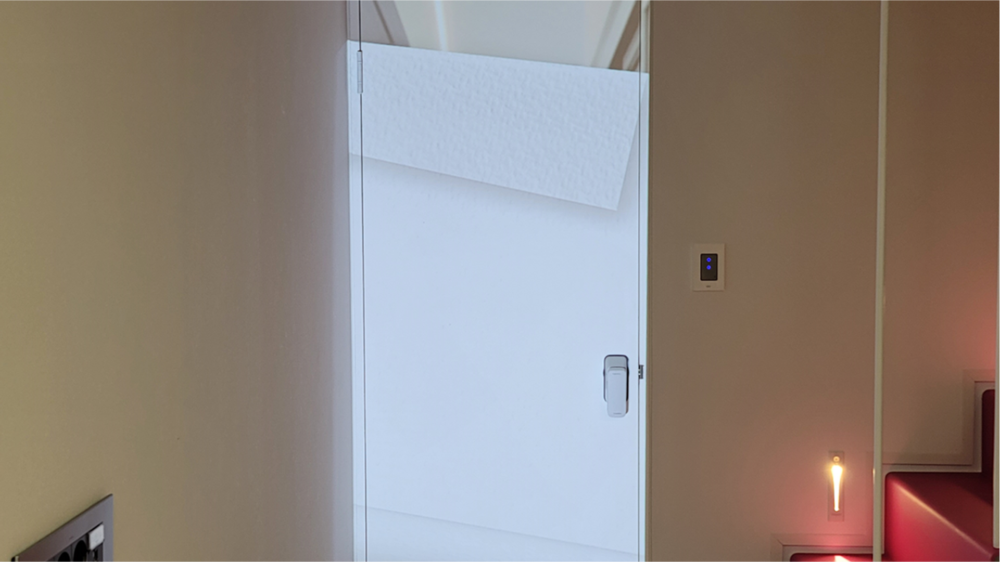
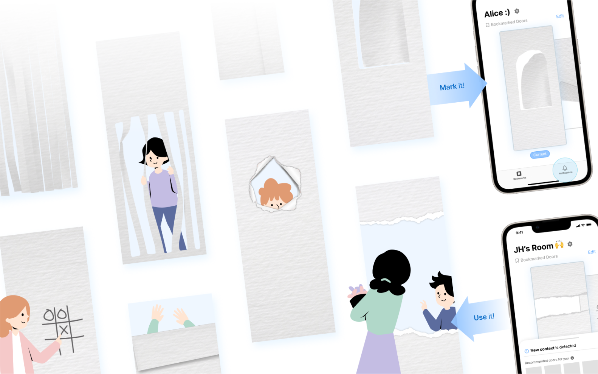
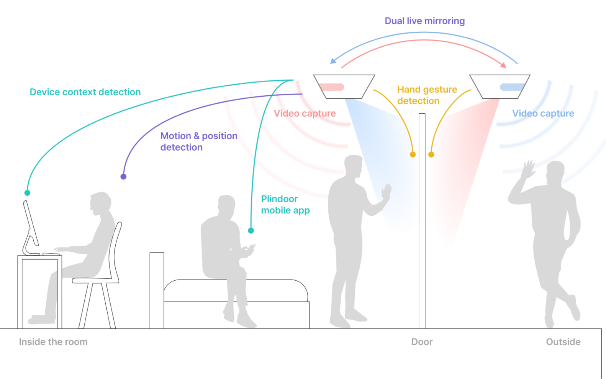
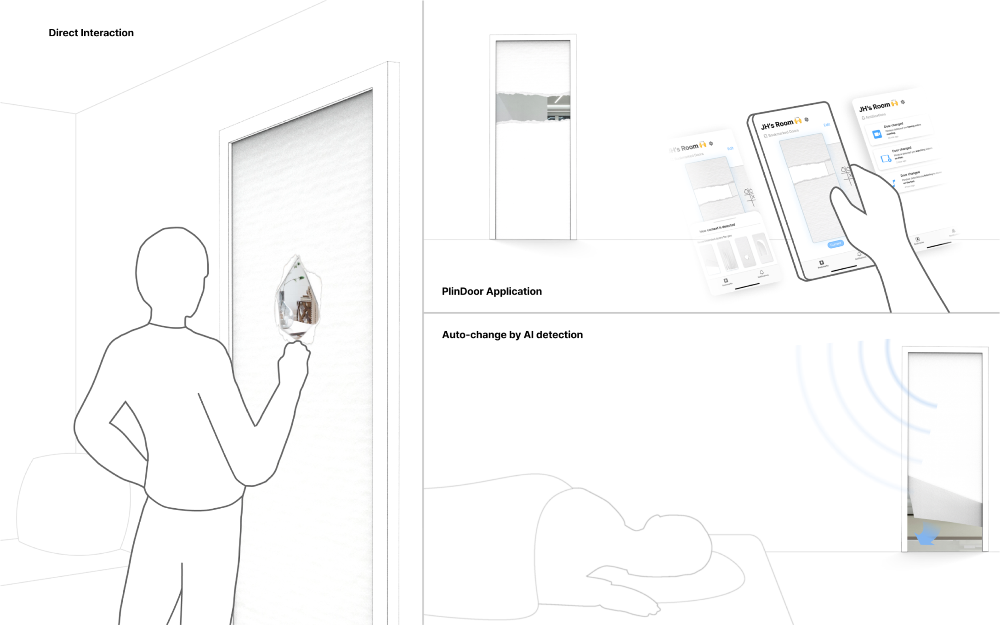
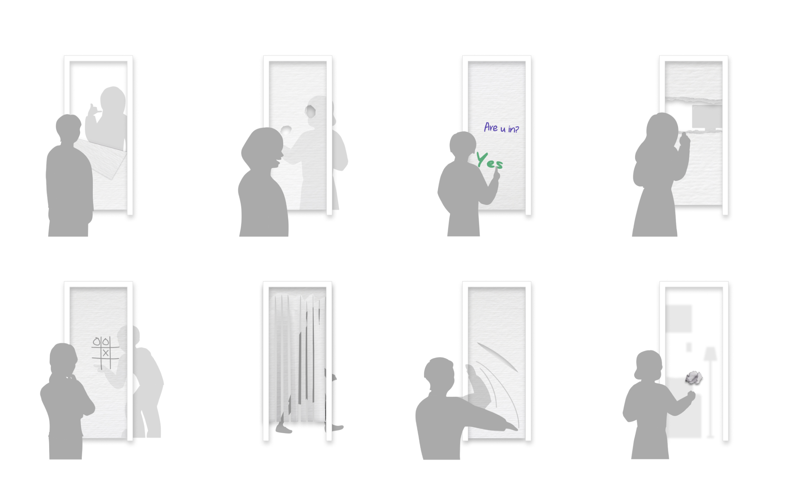

PlinDoor digitally augments a conventional room door to facilitate
communication between people at both sides. Users can control
PlinDoor's openness and express their moods by folding, cutting, and
making virtual holes as they do with real paper.
Conventional
doors connect or separate inside and outside, but they have a major
limitation of combining various functions on a linear scale (e.g.,
opening degree), hindering expression of mood and communication
intent. PlinDoor aims to grant people the freedom to express without
compromising other door functions. To promote user expression, we
employed virtual paper as an interaction metaphor.





We developed PlinDoor through three stages of iterative design
process. First, we conducted a participatory design session to observe
how participants express their moods and communication intent with
door-sized real paper. Second, we developed a low-fidelity prototype,
which consists of two smartphones (as wide-angle cameras) attached on
the both sides of the door, and two beam projectors showing video
streams composed with a variety of door designs inspired by the
participatory design session.
Finally, we tested the entire
usage scenario with participants, and improved the usability. For
instance, while there are situations suitable for manually creating
new door designs from scratch, in other cases participants preferred
to recall previously-used designs or recommended by the system.